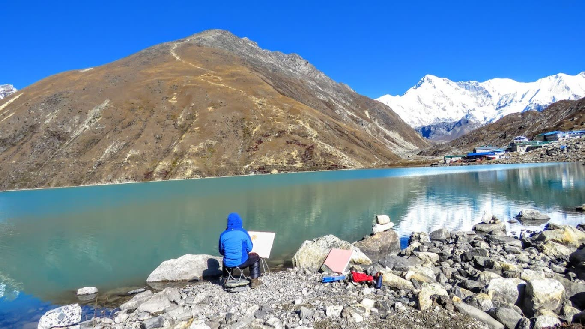
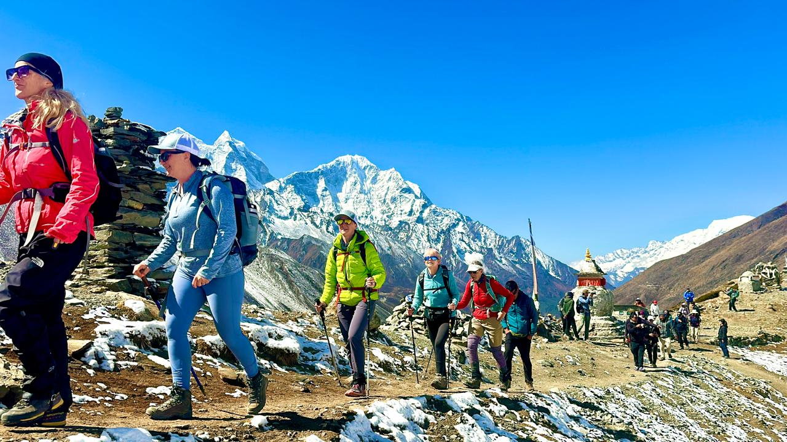
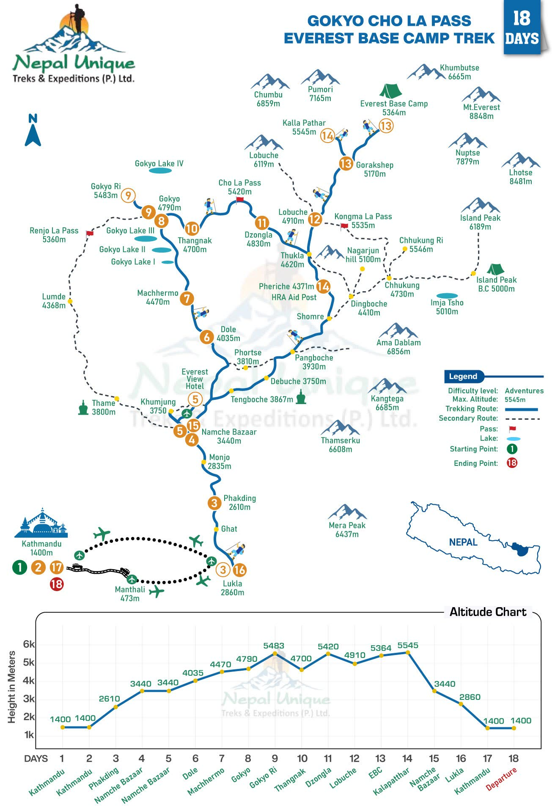

Gokyo Cho La Pass Trek via EBC
of the Gokyo Cho La Pass Trek via EBC Gokyo Cho La Pass Trek via EBC is a 15-day-long trekking journey in the Khumbu region of Nepal: overview, Cost, Itinerary, and More for 2025/26. Are you looking for one of the most adventurous and long ways to explore the Himalayas of Nepal and spend some adventurous vacation time?





Key Trip Facts
Trek Overview
Trip Highlights
One package offers a trek to Gokyo Lakes and Cho La Pass (5420 meters).
You will get to explore one of the three highest passes in the Everest region, the Cho La Pass.
The package starts with one of the most scenic drives from Kathmandu to Ramechhap and an even more adventurous flight from Ramechhap to Lukla.
Trekkers can also reach the heaven of Sherpa settlements and a major trading hub of Nepal, Namche Bazaar.
You will be walking inside the Sagarmatha National Park, one of the country's UNESCO World Heritage Sites.
Amazing chances to witness different wildlife, including Snow Leopard, Red Panda, Himalayan Tahr, Black Bear, Ghoral, birds like Himalayan Monal, Golden Eagle, Snow Patridge, and over 1100 species of plants.
The Gokyo Cho La Pass trek via EBC is one of the best ways to immerse deep into the Sherpa culture, tradition, lifestyle, and locally prepared delicacies.
Walk past several Chortens, Gumbas, monasteries, Buddhist temples, and significantly, the Tengboche Monastery (the largest and oldest monastery in the Khumbu region)
Chances to explore Gokyo Lakes, Ngozumpa Glacier, Everest Base Camp, and the Kalapatthar viewpoint.
Overview of the Gokyo Cho La Pass Trek via EBC
Gokyo Cho La Pass Trek via EBC is a 15-day-long trekking journey in the Khumbu region of Nepal: overview, Cost, Itinerary, and More for 2025/26. Are you looking for one of the most adventurous and long ways to explore the Himalayas of Nepal and spend some adventurous vacation time? In such a case, the Gokyo Cho La Pass Trek via EBC is the one you should not miss at all. This 15-day trek to Gokyo Lakes and Cho La Pass offers the perfect combination of refreshments, excitement, adventures, and adrenaline rush. Not just for experiencing an adrenaline rush, the Gokyo Cho La Pass Trek via EBC also takes you closer to the Sherpa settlements and their unique traditions.
The Gokyo Cho La Pass Trekking trail begins with a drive from Kathmandu to Ramechhap and then a flight to Lukla. From there, we will slowly and gradually go on the trekking journey. From Phakding to Namche Bazaar, Dingboche, Gorakshep, and then to Everest Base Camp before heading to the Cho La Pass and Gokyo Lakes, the journey keeps getting more and more exciting as we ascend higher. Besides, the technical aspects of this trek are quite demanding. However, the thrill and the energy you get after reaching your destination will make you forget all the hardships.
Furthermore, the trek to Gokyo Lakes and Cho La Pass also takes us through Khumbu Glaciers, one of the biggest glaciers in the Himalayas. Additionally, the route also traverses Chola Pass, which connects Everest Base Camp and Gokyo Valley. This traverse is quite challenging as it requires acclimatization as well as proper training with guidance. However, the journey is going to be worthwhile as it is always covered by ice and glaciers, and has extreme landscapes giving us breathtaking views of the mountains.
Besides, the trekkers also get chances to pass through several settlements, waterfalls, rivers, streams, and suspension bridges during the 15-Day Gokyo Lakes Cho La Pass Trek via EBC itineraries. Also, let us tell you that this map offers a few of the best opportunities to play with the snow, live in the remote parts of the Himalayas, and try out some of the best local delicacies.
Overall, the Gokyo Cho La Pass Trek via EBC map stands as an all-in-one combination of adventure, thrill, and unique experience. Learn more about this trekking package by reading the entire details.
Why choose us for the Gokyo Cho La Pass Trek via EBC?
Nepal Unique Trek & Expeditions has been organizing and providing trekking services for about 20 years. We have qualified and highly skilled team members to help you throughout your entire journey. Moreover, people from all over the world have collaborated with us for their dream destination trekking, including the Gokyo Cho La Pass Trek via EBC. Here are a few of the most important reasons to consider Nepal Unique Treks and Expeditions for the 15-day Everest Cho La Pass Trek via the EBC journey:
Nepal Unique Treks and Expeditions is a team of professional trekking experts, guides, and staff.
Our team makes sure to provide you with a well-curated, highly thought-out, and safe trekking package.
As Nepal Unique Treks and Expedition is a locally owned and established travel agency, we have a wealth of experience and a robust network to support trekking.
We believe in sustainable and responsible trekking journey that promotes both tourism and environmental cleanliness.
In case of emergencies, our guides will also carry first aid medical kits.
We will arrange high-quality hotels, restaurants, and guesthouses for your stay and food, depending on how much you want to spend in that regard.
You will also get proper assistance in learning new things, clearing doubts and queries, and interacting with the locals during the journey by our professionally trained and licensed guides.
Permits required for Gokyo Cho La Pass Trek via EBC
Permits are special documents that help you pass through areas where you are not normally allowed. So, all trekkers are required to have a permit while going on the Gokyo Cho La Pass Trek via EBC, and for this specific trekking journey, trekkers must obtain two different permits:
Sagarmatha National Park Entry Permit
Khumbu Pasang Lhamu Rural Municipality Entrance Permit
The first permit is required to enter the Sagarmatha National Park en route, whereas the second permit is required to enter the Khumbu region. Without these permits, we are not allowed to pass through those areas.
Is it Important to Obtain Travel Insurance For the Gokyo Lakes Cho La Pass Trek via EBC?
Insurance is crucial for trekkers while trekking on any Trekking Route in Nepal or worldwide. We recommend all trekkers obtain travel insurance before hitting the trail of Gokyo Lakes and Cho La Pass via EBC. Whether it be a medical condition or immediate evacuation, insurance always helps in emergency scenarios.
Besides, here are why obtaining travel insurance is more than crucial for the Gokyo Lakes Cho La Pass Trek via EBC.
Travel Insurance can help you claim the amount you spend during sudden and unforeseen situations like health issues or emergency evacuation.
You can also get benefits with travel insurance in case you lose any belongings during this 15-day Trek to Gokyo Lakes and Cho La Pass.
Travel insurance can also help you claim the amount you spend for the trekking package in case the booking needs to be canceled or delayed.
Gokyo Cho La Pass Trek via EBC Itinerary: Day by Day
15 Days program for Gokyo Cho La Pass Trek via EBC. Daily timings and sequences remain flexible according to weather, flight operations, and group pace.
Day 1: Kathmandu to Ramechhap by drive and fly to Lukla (2860 meters) and trek to Phakding or Manzo (2610 meters)
Approx. 2,610 m / 8,563 ft
Hey trekkers! it's the first day of the highly anticipated 15-day Gokyo Lakes Cho La Pass via Everest Base Camp Trek. As you wake up early and have your breakfast, our guides will check your backpack and documents before we start the journey. After that, the guides will take you to Ramechhap, which will be an adventurous and thrilling drive on the highway of Nepal. Once we reach Ramechhap, the trekkers will board a flight that takes you to Lukla within 20-25 minutes. At Lukla, we will take a quick rest, and have breakfast before heading towards Phakding or Monzo. This will probably be one of the easiest sections of the entire Gokyo Lakes Cho La Pass Trek. We will be walking in a rather developed part of the map with several tea houses, vegetation, settlements, rivers, and suspension bridges. Moreover, you can also enjoy interacting with the locals as you go. Within the next 4 to 5 hours of walking from Lukla, we will reach Phakding. Here you can check in at the hotel and stroll around the place before having dinner and sleeping the first night off in the Everest Base Camp Gokyo Lakes Cho La Pass Trekking map.
Day 2: Trek from Phakding (2610m) to Namche Bazaar (3440m)
Approx. 3,444 m / 11,299 ft
From Phakding, the Gokyo Lakes Cho La Pass Trekking trail extends towards Namche Bazaar. As we leave Phakding, the route follows the Dudh Koshi River which also requires us to cross several suspension bridges, including the Hillary Suspension Bridge. Along the way, the trail also passes through several other Sherpa villages, such as Monjo and Jorsalle before we make our way into the Sagarmatha National Park. However, remember that the trekkers need to get their permits and documents checked before entering the Sagarmatha National Park. As you keep walking in between the forests, past several rivers, waterfalls, settlements, etc, you will reach a point from where the route becomes very steep and difficult. However, remember that, passing this steep means reaching the Namche Bazaar. This town is known as one of the most significant trading hubs of Nepal and the best spot for acclimatization on the EBC Trekking trail. Utilize the rest of the day to stroll around the Namche Bazaar and spend some time in the cafes and hotels there. By the evening, we request the trekkers to return to the hotel in Namche Bazaar for dinner and an overnight stay.
Day 3: Acclimatization Day in Namche Bazaar (3440m)
Approx. 3,444 m / 11,299 ft
After ascending to an altitude of 3440 meters above sea level, Day 3 will be the first acclimatization day on the Gokyo Lakes Cho La Pass Trekking trail. There are two reasons to separate this day from the rest day in the trekking package; a) to help trekkers adapt to temperature and climatic conditions at the higher altitude and b) to witness the beauty of Namche Bazaar. One of the best things about Namche Bazaar is the way this place is settled. You will never in your wildest dreams, think that it is even possible to establish such a beautiful and facility-full town at such a high altitude. Walk around the town to witness so many ATMs, internet cafes, bakeries, and restaurants that prepare almost everything available in city areas like Kathmandu. In the meantime, we can also take you on a quick hike to the Everest View Hotel, the hotel located at the highest altitude. This hotel, famous for offering amazing cuisines while also serving spectacular views of Mount Everest, stands as a popular destination for many. If you have more energy, we recommend trekkers go for another quick hike to the Khumjung village to get mind-blowing views of different mountains like Mt. Everest, Ama Dablam, Lhotse, Nuptse, Cho-Oyu, Thamserku, and many others. Return to the hotel in Namche Bazaar by the evening for dinner and an overnight stay.
Day 4: Trek from Namche Bazaar (3440m) to Tengboche (3860m)
Approx. 3,860 m / 12,664 ft
Today, the trekkers will not have to walk too much but the journey will not be very easy at all. This section of the Gokyo Lakes Cho La Pass map includes both steep descents and gradual ascents, where we have to pass through several forests, Sherpa villages, and suspension bridges over pristine-flowing rivers. As we leave Namche Bazaar after having breakfast, our first checkpoint will be a village named Phunki Thenga. To reach Phunki Thega from Namche Bazaar, we need to walk on the path that gradually ascends on a wide well-made path that follows the valley on the side. From a distance, the Himalayas like Lhotse, Nuptse, and Ama Dablam encourage you throughout the journey. Moreover, we also pass through some beautifully settled Sherpa villages, including Kyangjuma and Sanasa, where the trekkers can find some tea houses. Once we pass these villages, a steep descent directly through the woods and rhododendron blossoms takes us to Dudh Koshi River and then to Phunki Thenga. This village, being the lowest altitude of today's Gokyo Cho La Pass Trekking journey, stands perfect for resting and having lunch. After lunch and a few moments of break time, we continue on the path to reach Tengboche. As you walk a bit deep into this route and cross a suspension bridge over the Dudh Koshi River, you start noticing that the trail becomes physically demanding. Take your time to stroll around the place before heading to the hotel for dinner and an overnight stay.
Day 5: Trek from Tengboche (3860m) to Dingboche (4410m)
Approx. 4,410 m / 14,469 ft
Today’s trek takes you deeper into the high Himalayas, bringing you above 4,000m for the first time on this journey. The trail winds through alpine forests, picturesque Sherpa villages, and open pastures, with the towering peaks of Ama Dablam, Lhotse, and Everest dominating the landscape. As you ascend, the scenery transforms from lush green forests to a rugged, glacial landscape, a sign that you’re approaching the higher altitudes of the Everest region. Well, the fifth day's journey is divided into three parts: Tengboche to Pangboche, Pangboche to Shomare, and Shomare to Dingboche. However, it will not take much longer for us to cover approximately 11 km on this day. We recommend the trekkers keep a slow and steady pace because the altitude is very high and oxygen, is very low. Even though altitude sickness is one thing to be scared or concerned about, the smaller settlements, environment, and barren lands (not barren if you go in the spring season), keep your eyes, heart, and brain, completely under some spell, the spell of nature. Starting on the bank of Imja Khola, this day's Gokyo Lakes Cho La Pass Trekking journey ends as we step our feet into the Dingboche village.
Day 6: Acclimatization Day in Dingboche (4410m)
Approx. 4,410 m / 14,469 ft
As we have ascended to such a high altitude, our body certainly requires some time to adapt to the temperature and climatic conditions here. Therefore, on the sixth day, we organize a rest day for the trekkers. However, a rest day does not mean sitting idle in the hotel. Instead, we strongly recommend all the trekkers to explore the place, interact with the locals, and try some local delicacies as well. Besides, our guides will also take you on a quick hike to the nearest viewpoint (just 300 meters above Dingboche). Besides, if you do not want to go for the hike, you are also free to stroll the Dingboche village and its surroundings like Chhukung and Imja. Believe us, whatever you do, you will not regret it at all. This rest day tends to make you physically and mentally ready to ascend the higher altitude with as little difficulty as possible. For that, the acclimatization in Dingboche can be utilized by hitting short hikes to Nagarjun Hill or Chhukung Ri. Regardless of which hiking route you choose, the adventure, thrill, experience, and amusement always follow you throughout the 15-day Gokyo Lakes Cho La Pass Trekking journey.
Day 7: Trek from Dingboche (4410m) to Lobuche (4910m)
Approx. 4,910 m / 16,109 ft
On the seventh day, as we have breakfast in the hotel, we need to ascend via Khumbu Khola valley to Dughla as the valley becomes narrower. A little more to walk and we will reach another beautiful village named Dusa before continuing towards the route full of large rocks by the steep mountains. As much more difficult the Gokyo Lakes Cho La Pass Trekking route becomes, the more you start getting chances to play with the snow and watch mountains from the closest range. Moreover, as you walk on this section of the trek to Gokyo Lakes via EBC, you get to see several monuments, prayer flags, Chhortens, and Gompas. Do you know what that means? It means that as you reach a higher altitude, you start immersing into more and more devoted societies. Therefore, the trekkers will have so much to enjoy, witness, and experience in this part of the journey. To make the walk even more convenient and encouraging, the mountains like Khumbuste (6,636 m), Lingtren (6,749 m), and Pumori (7,161 m) watch you from a distance. Within a few hours, you will reach Lobuche. This is the base of the Lobuche Peak (6119 meters), where we will have dinner and spend the night before ascending any further.
Day 8: Trek from Lobuche (4910m) to Gorakshep (5180m) then to Everest Base Camp (5364m), back to Gorakshep
Approx. 5,180 m / 16,995 ft
Is your Gokyo Lakes Trek Cho La Pass trekking journey going well for you? Well, what if we tell you that it is going to be even more exciting and adventurous? Yes, on the eighth day, the route ascends towards Gorakshep from Lobuche covering a total distance of about 11 kilometers. If we start walking early in the morning, it takes about 2 to 3 hours to complete this section of the Gokyo Lakes via the Cho La Pass trekking map. After reaching Gorakshep and checking in at the hotel, you will have a delicious lunch. Take your time to rest for a while after having lunch before our guides take you on a hike to the Everest Base Camp. About 3 to 4 more hours to walk on one of the most adventurous parts of the trek. At the Everest Base Camp, you will get to see many camps of climbers on their way to Mount Everest's peak. Take your time to capture as many photos and videos as possible, and explore the base camp, before returning to Gorakshep for dinner and an overnight stay.
Day 9: Trek from Gorakshep (5140m) to Kalapatthar (5550m) then Dzongla (4830m)
Approx. 5,550 m / 18,209 ft
Another day calls for another thrilling and exciting journey on the Gokyo Lakes Trek via the Cho La Pass Trekking map. Well, please wake up at around 4 A.M. because we will go for the early morning hike to the Kalapatthar viewpoint (5555 meters). The sunrise view you watch from this viewpoint offers you one of the best experiences of watching the sunrise ever in the world. Moreover, we can also watch the 360-degree panoramic views of different mountains, hills, valleys, Khumbu glaciers, and ice falls. After that, the guides will take you on a descending trail to Dzongla, another beautiful village in the Gokyo Lakes via the Cho La Pass Trekking route. In Dzongla, we recommend the trekkers stroll around the village, interact with the locals, and indulge in their unique lifestyle, culture, and tradition. After that, you can return to the hotel, have your dinner, and go for a lovely sleep at an altitude of 4830 meters above sea level.
Day 10: Trek from Dzongla (4830m) to Thagnak (4750m) via Cho La Pass (5367m)
Approx. 5,367 m / 17,608 ft
On the tenth day, we will reach one of the three major destinations of the entire Gokyo Lakes Cho La Pass via the EBC Trekking map. As you wake up early in the morning, and enjoy your breakfast, the guides from Nepal Unique Treks and Expeditions take you on a trail from Dzongla to Thangnak. However, the twist here is that we will first ascend to the Cho La Pass (5367 meters). Our journey, as soon as we start, drops to the basin after passing through a forest. Well, the trail might as well become more difficult due to rocks and barren lands. However, it will certainly be worth your while due to the scenes and scenarios. After walking a little more, the Gokyo Cho La Pass Trekking route enters winding Bergschrund trails. Regardless of the physical strain and pressure you need to dedicate for this section of the trek, watching all the scenes, and panoramic views, and even standing on the Cho La Pass makes it achieving and a proud moment for sure. Take your time to enjoy the views and experience of being at such a high altitude. After that, we will head towards Thagnak, the last destination of the day. Here, dinner and overnight stays will be organized by Nepal Unique Treks and Expeditions.
Day 11: Trek from Thagnak (4700m) to Gokyo (4750m)
Approx. 4,750 m / 15,584 ft
The trek to Gokyo Lakes Cho La Pass via the EBC trail continues as we leave Thagnak and ascend toward Gokyo. This will be a quick and short trekking route as we will cover a total distance of 2.7 kilometers which takes about 2 to 3 hours. Well, this section of the trek also allows the trekkers to pass over Nepal's longest glacier, Ngozumpa Glacier. As we pass the glacier and walk a little more, the trekkers will get to witness the second of the six lakes of the Gokyo Lakes system. We will not stop the journey here as our final destination will be the Gokyo hamlet, located on the edge of the third lake of the Gokyo Lakes series.
Day 12: Trek from Gokyo (4750m) to Dhole (4200m)
Approx. 4,200 m / 13,780 ft
Well, we are almost at the final days of the Gokyo Lakes Cho La Pass via EBC which sets us on the descending journey. On that verge, the guides will take you from Gokyo to Dhole on the twelfth day. It will be a rather pleasing and comfortable journey but still takes about 7 to 8 hours. Walking past several forests, and rivers, over some suspension bridges, and stopping by at different tea houses, we finally reach Dhole before the evening. As we reach Dhole, the trekkers can stroll around the village, interact with the locals, and try out some local delicacies as well. In the night, we will have dinner in the hotel and sleep for another night on the Gokyo Lakes Cho La Pass trekking map.
Day 13: Trek from Dhole (4200m) to Namche Bazaar (3440m)
Approx. 3,444 m / 11,299 ft
Another day calls in for another descending journey in the Gokyo Lakes Trek via Cho La Pass. As you have your breakfast, our guides will take you on a trail from Dhole to Namche Bazaar. Reaching Namche Bazaar means that you will step into the heaven of Sherpa settlements and one of the best towns in the entire Khumbu region. On your way to Namche Bazaar, the trekkers will pass through several plants, watch different animals, and find many tea houses as well. The number of tea houses in this section of the trek to Gokyo Lakes via Cho La Pass makes it more convenient and smooth for the trekkers. Once you reach Namche Bazaar, we recommend the trekkers visit any of the internet cafes, hotels, and spas there. Get yourself relaxed as that will certainly be necessary after such a long trekking journey. It takes about 5 to 6 hours for us to reach Namche Bazaar from Dhole which covers a distance of 12 kilometers. Overnight stay and dinner will be arranged by Nepal Unique Treks and Expeditions in Namche Bazaar.
Day 14: Trek from Namche Bazaar (3440m) to Phakding (2610m) and then to Lukla (2840m)
Approx. 2,840 m / 9,318 ft
It's the second last day of the 15 Days Gokyo Lakes Cho La Pass Trek via Everest Base Camp and we will be on our way to Lukla via Phakding. As we start the descending journey after having a fulfilling breakfast at Namche Bazaar, we need to walk on a steep descent track. Besides, this section of the trail also goes past suspension bridges over the Dudh Koshi River and some steep and rocky terrain. Therefore, we recommend the trekkers keep as slow and steady pace as possible. Also, we suggest you be very careful and attentive while covering this part of the trek. Within the next 7 to 8 hours, the trekkers will finally reach Lukla, located at an altitude of 2840 meters above sea level. Once you reach here, you can check in at the hotel, store your backpacks, get freshened up, and take a quick stroll of the village. Remember that, we will not return to Kathmandu on the fourteenth day. Therefore, dinner and overnight stay will be arranged in Lukla by our team.
Day 15: Lukla to Ramechhap drive back to Kathmandu. Participate in farewell dinner
Approx. 1,345 m / 4,413 ft
Finally, it's the day to put an end to the 15-Day Gokyo Lakes Trek via Cho La Pass and Everest Base Camp as we will return from Lukla to Kathmandu. However, the journey will be divided into two different sections: Firstly from Lukla to Ramechhap (20-25 minutes flight). And then via bus to Kathmandu (5 hours drive). Once you reach Kathmandu, get freshened up, we invite you for a farewell dinner. This will be the time when you share your overall experience with us and your fellow companions. After dinner, our 15-day Gokyo Lakes Cho La Pass Trek comes to an end.
What is Included (Regular Package)
What is Excluded
Booking Dates & Availability
Packing List for Gokyo Cho La Pass Trek via EBC
Essential Info: Down jackets and sleeping bags can be rented/arranged per package inclusions.High-Altitude Trail Gear (6 items)
Cold-Weather Layering System (5 items)
Sleep, Health & Permits (3 items)
Read before you book: Gokyo Cho La Pass Trek via EBC
Practical logistics derived directly from this package's route facts, inclusions, and elevation profile.
Accommodation & Meals (Guesthouse, Teahouse)
Accommodation follows the package grade (Guesthouse, Teahouse) in Kathmandu and along the Everest route. Check your package Includes section for included meals and Kathmandu hotel nights.
Permits & Local Logistics
Transportation is arranged via Car, Van and Flight. Applicable permits listed in the package inclusions are arranged by Nepal Unique Treks prior to departure.
Route Difficulty & Elevation (5,550 m)
Gokyo Cho La Pass Trek via EBC is rated Adventurous with a maximum elevation of 5,550 m. Follow your guide's pacing and stay hydrated throughout the 15 Days itinerary.
Best Time to Visit (March, April, May, October, November and December)
Recommended operating season on the source page: March, April, May, October, November and December. Additional official notes from the source page follow below.
Traveller Useful Information
The Gokyo Chola Pass trek is considered a moderate to difficult journey due to several factors that demand both physical and mental endurance.
Altitude: The trek reaches high altitudes, with the Chola Pass itself standing at over 5,420 meters. As a result, altitude sickness is a concern, and proper acclimatization is essential. Trekkers need to be prepared for the physical strain of high-altitude trekking.
Length and Duration: The trek typically takes around 15-17 days, requiring trekkers to hike for long hours each day (sometimes up to 6-8 hours per day). Consequently, the length and intensity of the trek can be physically challenging, demanding both endurance and resilience.
Challenging Terrain: The path includes steep ascents, rocky trails, and glacier crossings, especially over the Chola Pass. Moreover, the terrain can be rough, and in some sections, snow or ice may make the trail slippery and difficult to navigate.
Weather Conditions: The weather can be unpredictable, especially at higher altitudes, where temperatures drop significantly. Additionally, snowfall or rain can create additional challenges during the trek. Extremely cold temperatures can cause frostbite and exposed skin to freeze, swell, and lose its ability to feel.
Physical Fitness: While it does not require technical climbing skills, the trek demands a good level of physical fitness and stamina. Therefore, It is recommended for trekkers with prior trekking experience or those in good physical condition.
You don't have to worry about transportation from the very beginning of this trip. We will provide you with a private vehicle to pick up during landing and drop off during departure at the airport. A private vehicle will also be provided for sightseeing in the Kathmandu valley in our leisure time.
Regarding the flight to the Lukla airport, we will look out for you and get the best deals possible. However, if the weather is not favorable then either you can accommodate at the hotel and we will manage for the next flight or have the option to reach Lukla via Helicopter. Furthermore, we will also arrange highly safe and quality-checked tourist bus or private vehicle for the trekkers to commute from Kathmandu to Ramechhap before the trek and from Ramechhap to Kathmandu after the Gokyo Cho La Pass Trek.
Therefore, the trekkers do not have to worry about the means or ways to transport during the Gokyo Cho La Pass Trek.
It is necessary to have all the valid documents before starting our Gokyo Cho La Pass Trek. To ensure a streamlined process for all the things during the trek, we have prepared a list of things you need to have with you:
Valid passport
2 extra passport-size photos
Airline tickets
Separate photocopies of passport, and visa form (easily obtained at Kathmandu airport)
Proof of insurance
Dollars, pounds, or Euros in cash for purchasing a Nepalese visa at Kathmandu airport
Credit cards, Bank/ATM/Cash machine cards for withdrawing funds from cash machines (bring a photocopy of your cards), traveler's checks, etc.
While the above things only focus on the things that we require, it doesn't justify the beforehand training and preparation required for the trek overall. There are multiple phases in this trek where it gets demanding and our body must be able to cope with it to complete the expedition. Below are a few things you need to consider before you start this journey:
Gokyo Cho La Pass Trek can be challenging. Therefore, we need to be in the best possible physical condition. For this, you need to exercise regularly for months which includes cardio as well as strength. This helps you increase your stamina and overall endurance, ensuring you don't have any injuries or problems during the journey.
Since the overall trek is demanding, we need to be prepared mentally as well. Also, as we ascend the altitude, the facilities are much lesser, with just enough to pass through the route. So be prepared accordingly.
Our body requires some time to adapt to the high altitude where the oxygen density is quite low. There, in this journey, we acclimatize in multiple places to make sure we adapt to the environment and have altitude sickness moving further in the trek.
Amongst all the seasons, Spring and Autumn seasons are more favorable as there is less chance of fluctuation in changes in weather on a day-to-day basis. Also, we get to experience the stunning views of the Himalayas, the traditional culture of the people in high regions, and a more comfortable compared to other seasons.
Spring Season (March to May)
It is one of the most preferable seasons for Gokyo Cho La Pass Trek. The weather conditions are favorable with moderate temperature, skies are clear along with the dry trails making it easier for overall trekking.
Moreover, the wildflowers start to bloom and we get to see lush hills and rhododendrons along the way making the path more beautiful. With the clear sky, the visibility of the mountain peaks like Everest, Cho Oyu, and Makalu is also high.
Autumn Season (September to November)
Right after the spring season, the autumn season is also quite favorable for Gokyo Cho La Pass Trek. Similar to the spring season, the weather is consistent with fewer chances of extreme weather conditions. Additionally, the sky is also clear during the daytime with few clouds in the afternoon allowing us to get clear views along the route of the surroundings.
Moreover, in this season, the leaves start to change their colors and the flowers also start to fall. The fallen leaves and the flowers create a beautiful carpet of orange foliage en route.
You would be surprised to know that the meal availability and the accommodation are quite good at such an altitude as well. Moreover, we will ensure that you have the best meals and rooms provided during your stay on this entire journey.
In this expedition, we will find multiple tea houses and lodges that will provide lunch, breakfast, and dinner. The variety of the foods available during the initial phase of the trek is more. We can get local foods like dal, bhat, and momo to Western foods like pizza, pasta, and many more. However, as we ascend there are fewer options available but has enough energy to keep on moving on our further journey.
Similarly, for the accommodation, we will find multiple options from simple basic rooms to luxurious rooms during the initial section of our trek. But as we move ahead the options are lesser providing the basic amenities. For most of the days, we will be accommodating in the tea house. They are affordable and are the best value for money with the amenities they provide.
At high altitudes, the body struggles to adapt to lower oxygen levels, which can lead to altitude sickness. Common symptoms include headache, fatigue, nausea, shortness of breath, and dizziness often at altitudes above 2400m. Therefore, understanding and managing altitude sickness is essential to ensuring a safe and enjoyable trek.
How to prevent altitude sickness
Follow a careful acclimatization schedule.
Stay hydrated by drinking 3-4 liters of water daily
Eat a carbohydrate-rich diet
Using an oximeter to monitor oxygen levels
If you experience a rise in symptoms, it’s important to listen to your body and descend to a lower altitude as soon as possible.
Remember, altitude sickness affects everyone differently, so it’s crucial to stay alert and take action at the first sign of discomfort. With proper precautions like gradual ascent, hydration, and nutrition, you'll be well-prepared to complete and enjoy your trek.
We normally over-pack the items we necessarily don't require and sometimes forget to pack the things that are crucial during the trek. Therefore, getting the right gear is also an important section while trekking in remote areas. Below is a detailed packing list categorized for your convenience:
Head
Bandana or headscarf (useful for dusty conditions)
Warm hat (wool or synthetic, covering your ears)
Headlamp with extra batteries and bulbs
Sunglasses with UV protection
Additionally, prescription sunglasses (if required)
Upper Body
Polypropylene shirts (1 half sleeve and 2 long sleeves)
Light and expedition-weight thermal tops
Fleece wind-stopper jacket or pullover
Waterproof shell jacket (preferably breathable fabric)
Down vest and/or jacket (for extra warmth)
Furthermore, a Gore-Tex jacket with a hood (waterproof and breathable)
Hands
1 pair of lightweight poly-liner gloves
1 pair of lightweight wool or fleece gloves
Additionally, 1 pair of mittens (Gore-Tex over mitt with a polar fleece liner, seasonal)
Lower Body
Non-cotton underwear briefs
1 pair of hiking shorts
1 pair of hiking trousers
1 pair of lightweight thermal bottoms (seasonal)
Moreover, 1 pair of fleece or woolen trousers
1 pair of waterproof shell pants (breathable fabric)
Feet
2 pairs of thin, lightweight inner socks
2 pairs of heavy poly or wool socks
1 pair of hiking boots (sturdy soles, water-resistant, ankle support, broken-in)
1 pair of trainers or running shoes and/or sandals
Cotton socks (optional)
Additionally, gaiters (winter only, optional, low ankle-high version)
Sleeping
1 sleeping bag (rated to -10°C or 14°F)
Fleece sleeping bag liner (optional, for extra warmth and cleanliness)
Rucksack and Travel Bags
1 medium rucksack (50-70 liters, can be used as airplane carry-on)
1 large duffel bag (provided by Nepal Unique Treks)
1 small daypack/backpack (for carrying valuables, with good shoulder padding)
Small padlocks for duffel/kit bags
Additionally, 2 large waterproof rucksack covers (optional)
Medical
Small personal first-aid kit (simple and light)
Aspirin, first-aid tape, and plasters (Band-Aids)
Skin-blister repair kit
Anti-diarrhea pills
Anti-headache pills
Cough and/or cold medicine
Anti-altitude sickness pills (Diamox or Acetazolamide)
Stomach antibiotic (Ciprofloxacin, etc.)
Water purification tablets or water filter
1 set of earplugs
Furthermore, an extra pair of prescription glasses or contact lens supplies
Practical Items
1 small roll of repair tape
1 sewing-repair kit
1 cigarette lighter
1 small box of matches
1 compass or GPS (optional)
1 alarm clock/watch
1 digital camera with extra memory cards and batteries
Large Ziploc bags
2 water bottles (1 liter each)
1 small folding knife
Binoculars (optional)
Additionally, 4 large, waterproof, disposable rubbish sacks
Toiletries
1 medium-sized quick-drying towel
Toothbrush and toothpaste (preferably biodegradable)
Multi-purpose soap (preferably biodegradable)
Deodorants
Nail clippers
Face and body moisturizer
Female hygiene products
Small mirror
Personal Hygiene
Wet wipes (baby wipes)
Tissue/toilet roll
Anti-bacterial hand wash
We offer multiple options for your convenience to book your dream trekking trip. You can directly email or send a message through WhatsApp, Zalo, and Viber. Moreover, we can also customize the itinerary according to your requirements and make sure your trip goes according to your wishes.
After you choose how you want to proceed with the itinerary, for the booking we require a 30% deposit to secure your spot. In addition, you can communicate with our team directly regarding payment methods.
Finally, after the booking is confirmed, we will provide you with further information regarding preparations for your trip. This might include packing lists, travel insurance recommendations, visa requirements (if applicable), and other important details. Furthermore, if you have any queries regarding the booking process, feel free to contact us at any time.
Altitude Profile of Gokyo Cho La Pass Trek via EBC
Weather on Gokyo Cho La Pass Trek via EBC
Gokyo Cho La Pass Trek via EBC Route Map

Book This Trek
Contact our Kathmandu coordinators using the booking panel for private or fixed-group departures.
Trip Feedback
Explore verified traveller stories or leave feedback on Nepal Unique Treks.
Visit Nepal Unique Treks